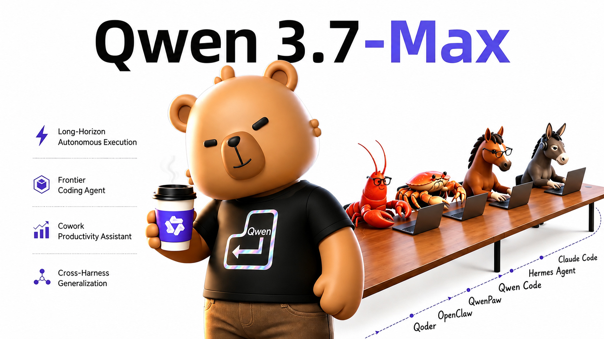
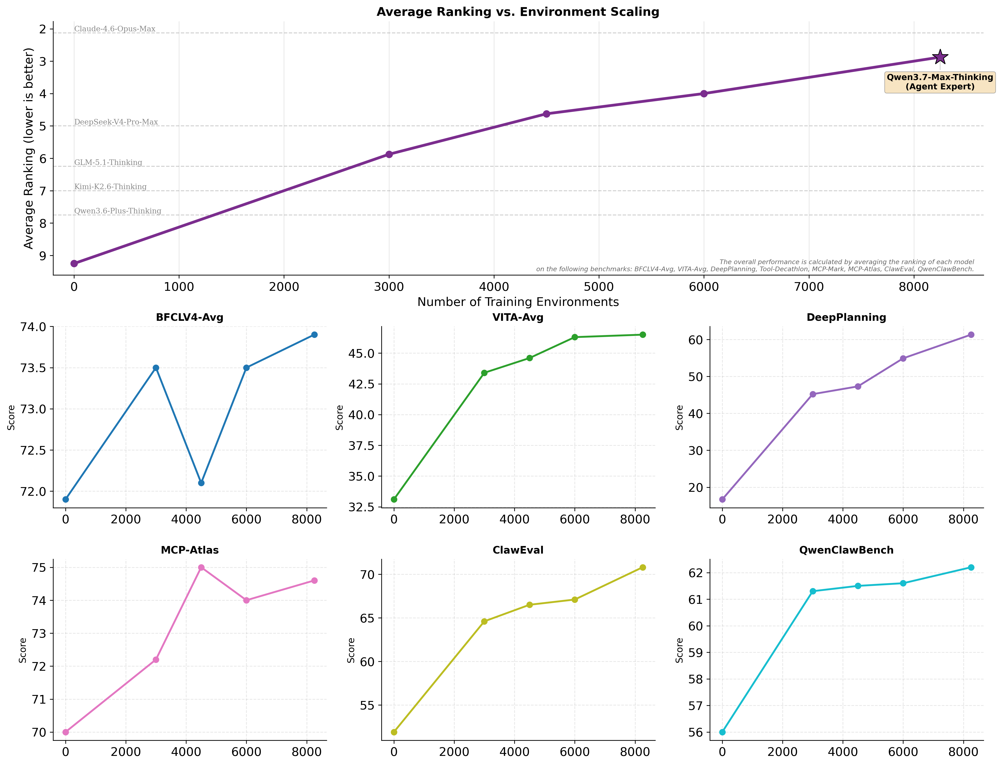
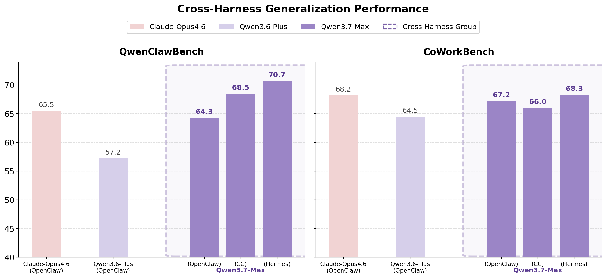
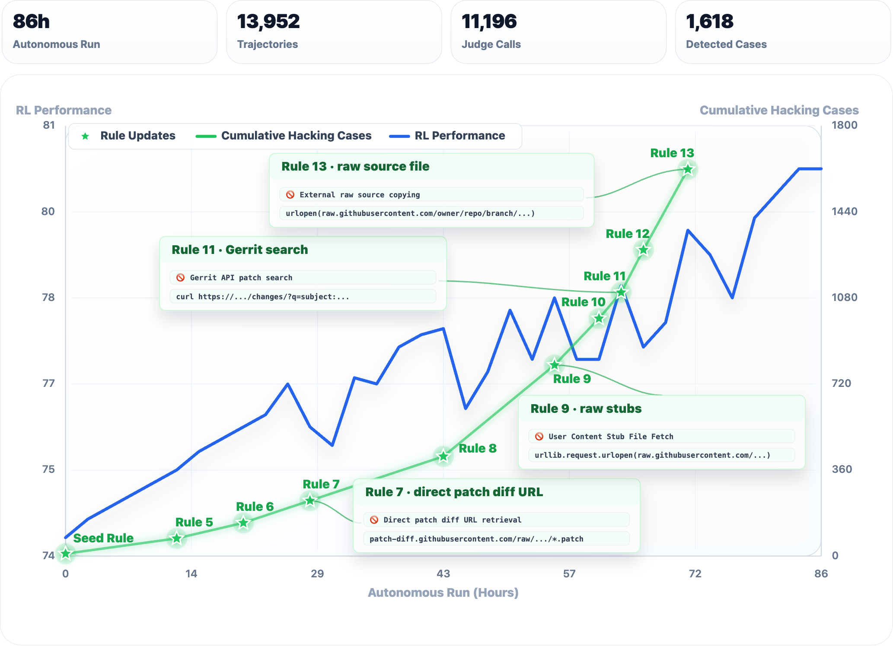

Qwen3.7-Max 是阿里通义最新发布的专有旗舰模型，作为面向智能体时代的通用底座而设计。
- 编写与调试代码
- 自动化办公流程
- 跨越数百乃至数千步的自主执行
- 面向 Claude Code、OpenClaw、Qwen Code 等多种 Harness 通用泛化

The Agent Frontier · 智能体的前沿
专为智能体时代打造的旗舰模型
Qwen3.7-Max 是阿里通义最新发布的专有旗舰模型，作为面向智能体时代的通用底座而设计。

从前端原型设计到复杂的多文件软件工程，统统胜任。
通过 MCP 协议与多智能体编排，无缝接入企业工作流。
在长达数十小时的任务中保持一致的推理与决策。
不绑定单一框架，在不同 Agent 脚手架中稳定一致。
即将通过阿里云百炼（Alibaba Cloud Model Studio）开放 API。
在多元基准上的整体竞争力
下图展示 Qwen3.7-Max 与同级别旗舰模型在编程、通用智能体、推理、通用能力、多语种五大类基准上的对比表现。

来源：Qwen 团队官方博客 · 图中数据为最终评测分数。
| 基准 | Opus-4.6 Max | K2.6 Thinking | GLM-5.1 | DS-V4-Pro Max | Qwen3.6-Plus | Qwen3.7-Max |
|---|---|---|---|---|---|---|
| Terminal Bench 2.0-Terminus | 65.4 | 66.7 | 63.5 | 67.9 | 61.6 | 69.7 |
| SWE-Verified | 80.8 | 80.2 | — | 80.6 | 78.8 | 80.4 |
| SWE-Pro | 57.3 | 59.5 | 58.8 | 59.0 | 56.6 | 60.6 |
| SWE-Multilingual | 77.5 | 76.7 | — | 76.2 | 73.8 | 78.3 |
| NL2Repo | 47.6 | 42.8 | 41.0 | 35.5 | 34.4 | 47.2 |
| SciCode | 51.9 | 52.2 | 45.1 | — | 41.4 | 53.5 |
| QwenSVG | 1541 | 1325 | 1605 | 1506 | 1432 | 1608 |
在 SWE-Pro、SWE-Multilingual、SciCode 与 QwenSVG 等基准上均处于领先位置。
| 基准 | Opus-4.6 Max | K2.6 | GLM-5.1 | DS-V4-Pro | Qwen3.6-Plus | Qwen3.7-Max |
|---|---|---|---|---|---|---|
| BFCL-V4 | 76.7 | 71.3 | 70.9 | 70.6 | 68.9 | 75.0 |
| MCP-Mark | 56.7 | 55.9 | 57.5 | 57.1 | 48.2 | 60.8 |
| MCP-Atlas | 75.8 | 66.6 | 71.8 | 73.6 | 74.1 | 76.4 |
| Skillsbench | — | 56.2 | 53.1 | 52.3 | 45.7 | 59.2 |
| SpreadSheetBench-v1 | 89.3 | 84.5 | 85.2 | 84.9 | 80.2 | 87.0 |
| Kernel Bench L3 (加速/胜率) | 2.63 / 98% | 1.41 / 80% | 2.00 / 78% | 1.07 / 54% | 1.03 / 48% | 1.98 / 96% |
| QwenWorldBench | 56.1 | 50.9 | 50.2 | 52.3 | 47.6 | 57.3 |
MCP-Mark、MCP-Atlas、Skillsbench、QwenWorldBench 等多项指标实现 SOTA。
在最难的推理基准（GPQA、HMMT、Apex、IMO）上展现出极强的硬核推理能力。
环境扩展 · 跨 Harness 泛化
沿用 Qwen3.5 提出的环境扩展思路，Qwen3.7 大幅扩展智能体训练环境的质量与多样性。

Rollout 训练框架将每个实例解耦为三个正交组件：
组合扩展 + 跨 Harness 强化学习，让模型学会真正解决问题，而非利用某一框架的捷径。

35 小时的内核优化 · 长程规划与执行
目标：在从未见过的 T-Head ZW-M890 PPU 硬件上，优化 SGLang 的 Extend Attention 算子。
起点仅有任务描述、参考实现和评测脚本 —— 无 profiling 数据、无硬件文档、无样例内核。模型自主诊断编译错误、修正正确性 bug、识别瓶颈，并多次重新设计内核架构。
Extend Attention 算子优化（相对 Triton 参考几何均值加速倍数）
在 NVIDIA H100 的 KernelBench L3 上，Qwen3.7-Max 在 96% 任务中产出加速内核，仅次于 Opus-4.6（98%）。
提前停止：连续 5 轮无工具调用即视为放弃。
在 SWE 任务的强化学习链路里引入 Qwen3.7-Max，构建奖励黑客自检 + 规则自演化的闭环：
保障 RL 奖励稳定，亦推动模型作为软件工程智能体持续自我提升。

动态累积生存博弈框架（Dynamic Cumulative Survival Games），模拟一整年的初创公司经营生命周期，跨数百轮决策。
从代码到办公到物理世界
从单条提示词生成富交互网页：Three.js 3D 场景、Canvas 动画、整页布局与动态 SVG。
「用 Three.js 创建一个实时交互的 3D 粒子系统网页：摄像头检测手掌张合控制粒子收缩与扩散；手势 1 时粒子拼出 “hello, world”，手势 2 时拼出 “I'am Qwen”；文字带 3D 旋转。」
官方示例包含 5 个 Demo，覆盖 3D、动画、布局、SVG 等典型前端场景。
通过 office-cli 等工具自主调用完成 —— 无需人工分步指令。
Qwen3.7-Max 通过工具调用操控四足机器狗，在物理环境中完成物理理解、规划、记忆与决策。
机器人智能体脚手架，统一工具调用入口。
导航基础模型，支撑物理空间内的连续移动。
多种基于 Qwen-plus 构建的视觉感知能力。
演示视频：20 分钟内的工具调用链、机器狗第一人称视角轨迹、长期记忆三路同步呈现。
与主流智能体框架原生兼容
Qwen API 兼容 Anthropic 协议，直接复用。
通过百炼（Model Studio）连接，OpenAI 兼容模式。
针对 Qwen 系列深度优化的官方 CLI。
API 支持 preserve_thinking，可保留历史轮次的思考链 —— 智能体任务推荐开启。
Qwen3.7-Max 将前沿推理、跨 Harness 通用性，与超长时段的稳定执行结合在一起，为面向智能体的应用提供了强大、可扩展的底座。
即将上线阿里云百炼（Alibaba Cloud Model Studio） · qwen.ai/blog?id=qwen3.7